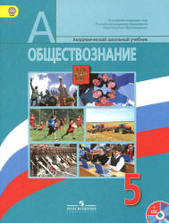
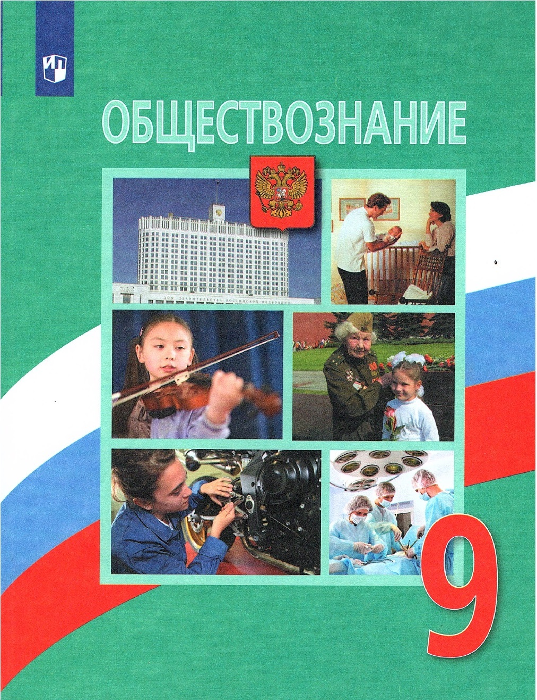

Методическте указания
Методические работы, разработанные мной
-

Разработка урока "Финансовая граматность пятиклассника"
Главная цель методической разработки – проект учебного занятия. Форма проведения занятия – урок с элементами практикума и игры.......
-

Презентация "Обобщение передового педагогического опыта"
Методика изучения и обобщения передового педагогического опыта. В помощь педагогу.
-
План воспитательной работы классного руководителя
План воспитательной работы.
-

Семейные правоотношения
Форма урока: лекция с элементами беседы, проблемно-поисковыми заданиями и практической работой учащихся.
-
Памятка для учеников
ПДД для пешехода:
1. Пешеход имеет право:
- передвигаться по дорогам в соответствии с настоящими Правилами;
- на преимущественное пересечение проезжей части дороги по нерегулируемому пешеходному переходу, а также по регулируемому пешеходному переходу при разрешающем сигнале регулировщика или светофора.
2. Пешеход обязан:
- двигаться по тротуару, пешеходной или велосипедной дорожке, а при их отсутствии — по обочине.
- В случае отсутствия указанных элементов дороги или невозможности движения пешеходов по ним допускается движение пешехода по краю ее проезжей части навстречу движению транспортных средств.
- При движении по краю проезжей части дороги в темное время суток пешеход должен обозначить себя световозвращающим элементом (элементами). Световозвращающие характеристики данных элементов устанавливаются техническими нормативными правовыми актами;
- переходить (пересекать) проезжую часть дороги по подземному, надземному пешеходным переходам, а при их отсутствии, убедившись, что выход на проезжую часть дороги безопасен, — по наземному пешеходному переходу (при отсутствии наземного пешеходного перехода — на перекрестке по линии тротуаров или обочин);
- при отсутствии в пределах видимости пешехода подземного, надземного, наземного пешеходных переходов и перекрестка переходить (пересекать) проезжую часть дороги по кратчайшей траектории на участке, где дорога хорошо просматривается в обе стороны, убедившись, что выход на проезжую часть дороги безопасен и своими действиями пешеход не создаст препятствия для движения транспортных средств.
- При пересечении проезжей части дороги вне подземного, надземного, наземного пешеходных переходов и перекрестка в темное время суток пешеходу рекомендуется обозначить себя световозвращающим элементом (элементами).
3. Пешеходу запрещается:
- двигаться по краю проезжей части дороги при наличии тротуара, пешеходной или велосипедной дорожки, обочины, по которым возможно движение пешеходов, за исключением случаев, указанных в пунктах 21 и 135 настоящих Правил;
- задерживаться и останавливаться на проезжей части дороги, в том числе на линии горизонтальной дорожной разметки, разделяющей встречные и попутные потоки транспортных средств, за исключением остановки на островках безопасности;
- переходить (пересекать) проезжую часть вне подземного, надземного, наземного пешеходных переходов на участке дороги: с разделительной зоной, разделительной полосой; с общим числом полос движения шесть и более; где установлены дорожные ограждения;
- выходить на проезжую часть дороги из-за стоящего транспортного средства или иного объекта, ограничивающего обзорность дороги, не убедившись в отсутствии приближающихся транспортных средств.
4. В темное время суток и (или) при недостаточной видимости дороги в случае движения по обочине или по краю проезжей части дороги пешеход, ведущий велосипед, мопед, мотоцикл без бокового прицепа, обозначенный габаритными огнями, сигнальными фонарями или световозвращателями (световозвращающими лентами), должен двигаться по ходу движения транспортных средств.
5. При приближении транспортного средства с включенными маячками синего или синего и красного цветов пешеходу запрещается переходить (пересекать) проезжую часть дороги, а пешеход, находящийся на проезжей части дороги, должен покинуть ее, соблюдая меры предосторожности.
6. Движение организованной пешеходной колонны по проезжей части дороги разрешается только по направлению движения транспортных средств по правой стороне не более чем по четыре человека в ряд. В светлое время суток впереди и сзади с левой стороны этой колонны должны быть сопровождающие с флажками красного цвета, а в темное время суток и (или) при недостаточной видимости дороги впереди — сопровождающие с фонарем, излучающим белый свет, и сзади — излучающим красный свет.
7. Группы детей разрешается водить только по тротуарам, пешеходным и велосипедным дорожкам, а при их отсутствии — по обочинам навстречу движению транспортных средств и только в светлое время суток. При этом их передвижение осуществляется колонной не более чем по двое детей в ряд в сопровождении совершеннолетних из расчета не менее одного сопровождающего на двадцать детей.
-
Безопасность в интернете:
- Нормы поведения и нравственные принципы одинаковы как в виртуальном, так и в реальном мире.
- Незаконное копирование продуктов труда других людей (музыки, игр, программ и т.д.) считается плагиатом (умышленное присвоение авторства чужого произведения).
- Не верьте всему, что в видите или читаете в интернете. При наличии сомнений в правдивости какой-то информации следует обратиться за советом к взрослым.
- Нельзя сообщать другим пользователям интернета свою личную информацию (адрес, номер телефона, номер школы, любимые места для игр и т.д.).
- Если вы общаетесь в чатах, пользуетесь программами мгновенной передачи сообщений, играете в сетевые игры, занимаетесь в интернете чем-то, что требует указания идентификационного имени пользователя, тогда выберите это имя вместе со взрослыми, чтобы убедиться, что оно не содержит никакой личной информации.
- Интернет-друзья могут на самом деле быть не теми, за кого они себя выдают, поэтому вы не должны встречаться с интернет-друзьями лично.
- Нельзя открывать файлы, присланные от неизвестных вам людей. Эти файлы могут содержать вирусы или фото/видео с нежелательным содержанием.
- Научитесь доверять интуиции. Если что-нибудь в интернете будет вызывать у вас психологический дискомфорт, поделитесь своими впечатлениями с взрослыми.
-
Памятка для родителей
Рекомендации:
- Ежедневно интересуйтесь школьными делами детей, проявляя внимание и терпение.
- Не скупитесь на похвалу, замечайте даже самые незначительные достижения ребёнка, его посильные успехи.
- Развивайте любознательность, поощряйте любопытство, удовлетворяйте потребность ребёнка в знаниях.
- Покупайте и дарите книги, пластинки, картины. Читайте вслух, предлагайте ребёнку почитать вам, обсуждайте прочитанное.
- Постарайтесь создать условия, облегчающие учёбу ребёнка:
- бытовые: хорошее питание, щадящий режим, полноценный сон, спокойная обстановка, уютное и удобное место для занятий и т.п.;
- эмоциональные: проявляйте веру в возможности ребёнка, не теряйте надежду на успех, радуйтесь малейшим достижениям, высказывайте любовь и терпение в ожидании успеха, не оскорбляйте его в случае неудачи и т.п.;
- культурные: обеспечьте ребёнка справочниками, словарями, пособиями, атласами, книгами по школьной программе, кассетами; используйте магнитофон для учебных занятий, вместе смотрите учебно-познавательные программы по ТВ, обсуждайте увиденное и т.п.
- Слушайте своего ребёнка: пусть он пересказывает то, что надо заучить, запомнить, периодически диктуйте тексты для записывания, спрашивайте по вопросам учебника и т.п.
- Регулярно знакомьте с расписанием уроков, факультативов, кружков, дополнительных занятий для контроля и для оказания возможной помощи.
- Делитесь знаниями с детьми из области, в которой вы преуспели, обогащайте их.
- Помните, что не только оценка должна быть в центре внимания родителей, а знания, даже если сегодня ими воспользоваться невозможно. Поэтому думайте о будущем и объясняйте детям, где и когда можно будет воспользоваться знаниями.
- Не оставляйте без внимания свободное время ребёнка, помогите сделать его полезным и содержательным, принимайте участие в его проведении.